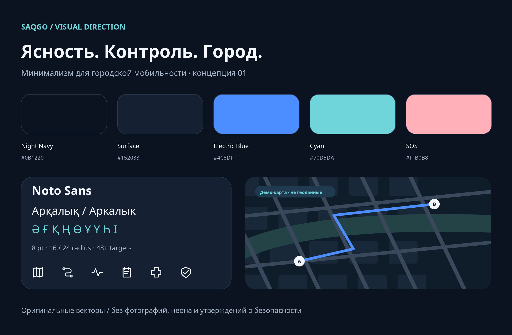

Пять первых экранов: карта, маршрут, SmartRoads, LifeLog и SOS. Это визуальные макеты, не работающее приложение. Карта схематическая, все показатели синтетические. Реальная карта Аркалыка ещё не подключена.
Исходная концепция оформлена по-русски; все пять экранов имеют самостоятельные RU/ҚАЗ варианты.
